Full-stack products. Document intelligence. Data-driven decisions.
Computer Science & Engineering (AI & ML) undergraduate at JECRC University · Class of 2027 · Jaipur, India
01 / About
I build across web applications, applied AI and analytical workflows. I enjoy tracing a problem from the underlying data and business requirements through implementation, evaluation and deployment.
- Engineering: built two full-stack products during my Grids Apps internship and led an international distributed development team.
- Current focus: simulated energy operations with GridForge AI, retrieval-augmented document intelligence with AetherQ, and transaction-risk modelling.
- Perspective: experience in software delivery, data analytics and commercial operations in Nairobi, Kenya.
- Learning: B.Tech CSE (AI & ML), 8.72/10 CGPA; participating in the McKinsey.org Forward Program.
02 / Selected builds
GridForge AI
Industrial energy operations · Simulation prototype
Telemetry ingestion, constrained allocation and an approval-driven dispatch workflow in a desktop/web prototype. Designed to investigate how operational decisions can be validated before a simulated action is issued.
- A saved 9-stage scenario processed 3,995 synthetic telemetry records, including outage queueing and reconciliation after reconnection.
- Combines telemetry freshness checks, rolling-mean forecasting, allocation constraints and simulated dispatch acknowledgements.
- Stack: React · TypeScript · Tauri · Python · FastAPI · PostgreSQL · SQLite
AetherQ
Document intelligence · RAG + Text-to-SQL prototype
A Next.js/Supabase application for PDF, DOCX and text ingestion, pgvector semantic retrieval and source-linked LLM responses.
- Retrieval pipeline uses 1,000-character chunks with 200-character overlap to preserve context between chunks.
- Text-to-SQL generates queries against a predefined schema, with optional PostgreSQL execution and tabular results.
- Stack: Next.js · TypeScript · Supabase · PostgreSQL · pgvector · Groq
Credit Card Fraud Detection
Transaction-risk modelling · ML prototype
Python feature-engineering and training workflows across Random Forest, XGBoost, LightGBM and CatBoost, with interfaces for exploring predictions.
- Saved Random Forest evaluation: 0.88 F1 · 90% precision · 86% recall on 85,443 test transactions, including 148 fraud cases.
- Evaluation is reported for the fraud class from the saved notebook run.
- Stack: Python · Pandas · scikit-learn · XGBoost · LightGBM · CatBoost
Analytical notebooks
- Logi AI / Call-Centre Simulation — Python queue simulation comparing 1–5 staffing configurations, mean and 95th-percentile waiting times, and changing demand assumptions. Built with NumPy, Pandas and Matplotlib.
- Statistical A/B Testing Suite — synthetic experiment with 17,000 observations across two arms, conversion comparisons, confidence intervals and a two-proportion z-test. Built with Python, SciPy and Statsmodels.
More explorations / agent tooling & developer platforms
- MindineersOS — an agent-platform exploration with a TypeScript monorepo, React dashboard, modular runtime and database integrations. See the repository for implementation details and setup.
- CodeAmbers — a TypeScript web-platform project organized into frontend and backend workspaces, with dashboard and agent-management interfaces.
03 / Toolkit
Languages
Python · SQL · TypeScript · JavaScript
Frameworks & development
React · Next.js · FastAPI · REST APIs · Git/GitHub · Postman
AI/ML & data
Pandas · NumPy · scikit-learn · XGBoost · LLM integration · RAG · Embeddings · Statistical analysis
Databases & cloud
PostgreSQL · SQLite · Supabase · pgvector · Google Cloud Fundamentals
Foundations
Data Structures & Algorithms · OOP · DBMS · Operating Systems · Computer Networks
04 / Experience
Software Engineer Intern · Grids Apps LLC
Remote · Jul–Aug 2026
- Built two full-stack products while working with and leading an international distributed team, owning deliverables across design, frontend/backend development, API integration, testing, debugging and release preparation.
- Deployed an Android application through Google Play Console and a web application to production, managing builds, deployment configuration and release workflows.
Client/product details are confidential under NDA.
Commercial Apprentice · Fracht Kenya Ltd.
Nairobi, Kenya · Jul–Aug 2025
- Analyzed commercial opportunities across East African markets and supported business-development research across commercial and operational functions.
- Reviewed logistics data-capture and reporting workflows, identified information gaps and communicated recommendations to senior stakeholders.
Data Analytics Intern · Samatrix Consulting Pvt. Ltd.
Remote · Jun–Jul 2025
- Used Python and Pandas for data preparation, validation and analytical investigation of structured datasets.
05 / Leadership & learning
- Operations Lead, JECRC Incubation Centre · Oct 2023–Nov 2024 — coordinated entrepreneurship activities and events.
- Campus Executive, E-Cell IIT Bombay · Jul–Dec 2024.
- National Entrepreneurship Challenge 2024 — winning contingent member, IIT Bombay.
- Top 4 Team, BitByBit 48-Hour Hackathon — Cognizance 2025, IIT Roorkee.
- McKinsey.org Forward Program — ongoing professional development.
Selected certifications: Google Cloud Computing Foundations · Data Analysis Using Python · Deep Learning with Python · Leadership & Team Effectiveness.
06 / Connect
Interested in software engineering, applied AI and technology consulting opportunities. I like conversations that connect engineering decisions to a useful outcome.
Portfolio · LinkedIn · Email · All repositories
Understand the problem. Build deliberately. Measure honestly.